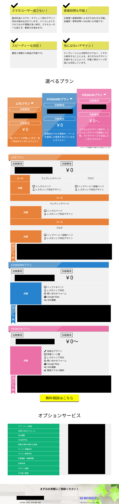
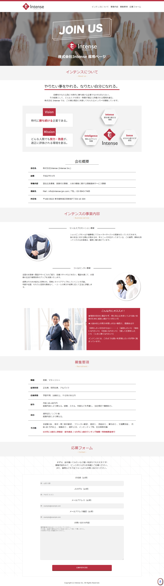
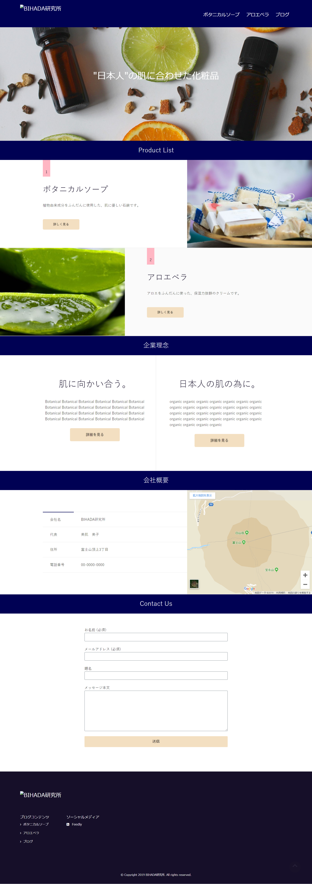

※会社が空中分解する事になり、急いで作ったページです。
ところどころ、まだ未完成な部分もある場合もございますが、ご了承ください。
01.SKILLs
◆言語◆
HTML5 , CSS3 , SASS(SCSS) , JavaScript , PHP
◆フレームワーク等◆
Bootstrap , jQuery , Laravel
◆環境等◆
Wordpress , Xampp , MySQL , MariaDB , Apache , Visual Studio Code , Eclipse , Windows10 , Smartphone , Git , TortoiseGit , GitHub , FTP , FFFTP , TeraTerm
◆その他キーワード◆
BEM , Composer , npm , gulp , ejs , Node.js , SEO , Responsive-Design
◆まとめ◆
WEBサイト制作メンバーとして、コーディングを担当していました。主な言語はHTML、CSS(SCSS)、JavaScriptです。
WEB系エンジニアになりたいと思ってますので、会社の研修と自己学習でPHP(Laravel)を勉強しています。
02.WORKs
★TORIBIRD★
言語：
HTML , CSS , Materialize(CSSフレームワーク) , JavaScript , Laravel
環境：
Visual Studio Code , Xampp , MySQL , MariaDB , Apache , Windows10 , Git , GitHub , FTP , TeraTerm
キーワード：
Node.js , npm , composer , Artisan , Eloquent , migration , MVCモデル , CRUD , バリデーション , レスポンシブ対応デザイン
★PORTFOLIOサイト★
言語：
HTML , SASS(SCSS) , JavaScript
環境：
Visual Studio Code , Windows10 , Git , GitHub , FTP
キーワード：
レスポンシブ対応デザイン , ヒーローイメージ
★WEBサイト例★






言語：
HTML , SASS(SCSS) , JavaScript , jQuery , PHP , Wordpress
環境：
Visual Studio Code , Windows10 , Git , GitHub , FTP
キーワード：
レスポンシブ対応デザイン
★問い合わせフォーム作成★
言語：
HTML , CSS , PHP
環境：
Visual Studio Code , Windows10 , Git , GitHub , FTP
キーワード：
バリデーション
★オセロ★
言語：
HTML , CSS, JavaScript
環境：
Visual Studio Code , Windows10 , Git , GitHub , FTP
★電卓★
言語：
HTML , CSS , JavaScript
環境：
Visual Studio Code , Windows10 , Git , GitHub , FTP